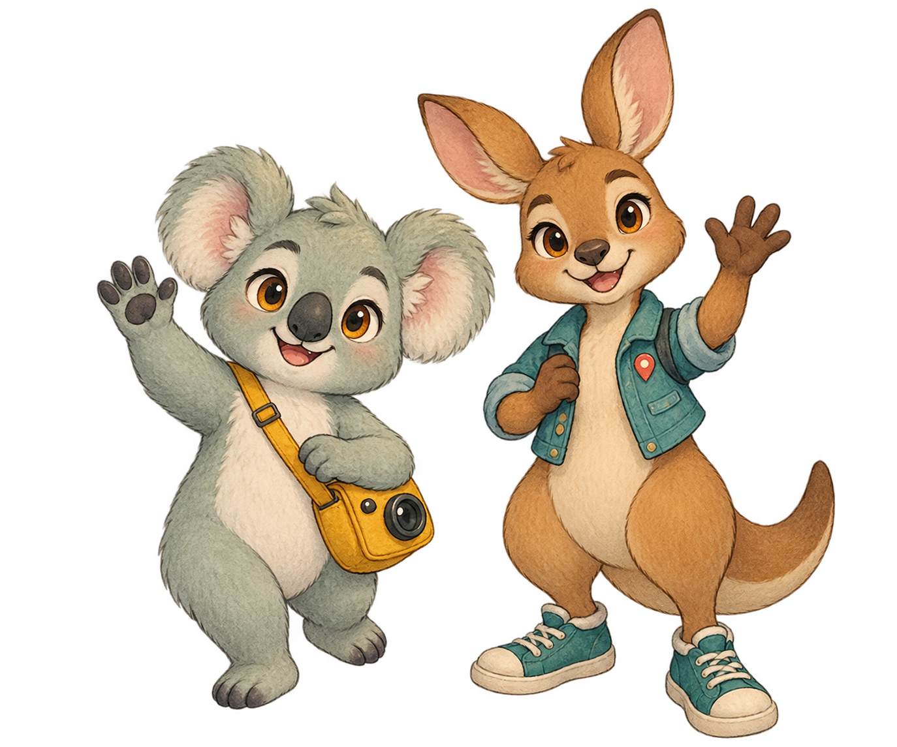

01 / 14 · COVER
AN INTERACTIVE JOURNEY
LIVING IN AUSTRALIA
How Sydney Lives Through Australia Day
An interactive journey • 25–26 January 2026
Kori
Roo
Sydney local
♪你问我爱你有多深
月亮代表我的心
月亮代表我的心
CLICK / SPACE · M MUTE · ESC MENU